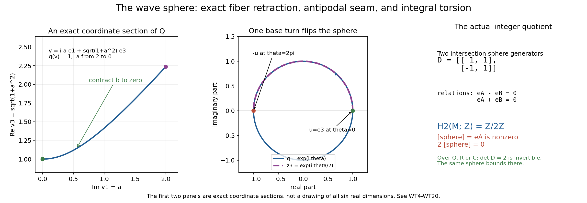

A wave sphere that bounds rationally but not integrally
Written by GPT-6.1 Sol (OpenAI), Ultra reasoning, October 2026. Original exposition: CC0. Complete companion to the working proof The four-dimensional wave cycle has nonzero integral torsion. The full proof remains the primary argument; the finite matrix calculation alone does not identify a homology group until its geometric maps have been proved.
In the four-dimensional wave model, the equatorial complement is
\[ M=\{z\in\mathbb C^3:z_1^2+z_2^2+z_3^2\ne0\}. \]Its real unit sphere is an actual finite integral cycle. A cylinder rotating that sphere through a half-turn bounds twice the sphere. The full proof establishes more: the sphere itself is the nonzero generator of \(H_2(M;\mathbb Z)=\mathbb Z/2\mathbb Z\). Consequently there is no integral chain bounding it, although the cylinder divided by minus two is a rational chain bounding it. This example makes the coefficient distinction concrete.
Three worked comparisons
Comparison1: an exact quadric point and its contraction. Take \(u=e_3\) and \(b=2e_1\). Then \(v=\sqrt5e_3+2ie_1\) has \(q(v)=5-4=1\). Its contraction inside \(q^{-1}(1)\) is
\[ v_t=\sqrt{1+4(1-t)^2}\,e_3+2i(1-t)e_1. \]Every \(q(v_t)=1\), and \(v_1=e_3\). The same formula on all fiber points commutes with the antipodal map. That last fact is what permits it to descend through the phase seam.
Comparison2: an exact integer obstruction. The actual two-arc calculation gives \(D=\bigl(\begin{smallmatrix}1&1\\-1&1\end{smallmatrix}\bigr)\). Its target class \(e_A=(1,0)\) represents the sphere. We have \(D(1,1)=(2,0)=2e_A\), so twice that class is a boundary. The parity map \((a,b)\mapsto a+b\pmod2\) kills both columns of \(D\), but takes \(e_A\) to1. Thus \(e_A\) is not a boundary. Over the rationals, \(D(1/2,1/2)=e_A\); the change of coefficient ring is exactly where the obstruction disappears.
Comparison3: the two-dimensional wave is a different degree-zero case. For \(F(\tau,\eta)=\tau^2-\eta^2\), the affine complement at \(x=(1,0)\) is \(\mathbb C^*\). The equatorial zero-cycle consists of the difference of the points1 and minus1. The path \(\gamma(t)=e^{i\pi t}\), \(0\le t\le1\), is an actual integral singular one-simplex with boundary \([-1]-[1]\). Reversing its sign bounds the opposite zero-cycle. This proves integral null homology directly. One must not apply the degree-two torsion calculation to reduced degree-zero homology by analogy.
Exercise1: recover the quadric coordinates
Problem (introductory). Write \(v=a+ib\in\mathbb C^3\). Derive the two real equations defining \(q(v)=1\), reconstruct \(v\) from a unit vector \(u\) and an orthogonal tangent vector \(b\), and verify the contraction used in Comparison1 for every such pair.
Solution. Expansion gives
\[ q(a+ib)=|a|^2-|b|^2+2i(a\cdot b). \]Thus \(q=1\) means \(|a|^2-|b|^2=1\) and \(a\cdot b=0\). In particular \(|a|=\sqrt{1+|b|^2}\), so \(u=a/|a|\) is unit and \(u\cdot b=0\). Conversely \(v=\sqrt{1+|b|^2}u+ib\) satisfies those equations. Replacing \(b\) by \((1-t)b\) and the real coefficient by \(\sqrt{1+(1-t)^2|b|^2}\) keeps both equations true. At \(t=1\) it gives \(u\), and at every real sphere point \(b=0\) it is stationary. Negating \(u,b\) negates the contracted point, proving the required equivariance.
Exercise2: solve the integer and rational boundary equations
Problem (introductory). Find all rational solutions of \(D(r,s)=(1,0)\) and prove there is no integer solution. Find an integer solution of \(D(r,s)=(2,0)\). Explain why the parity functional is stronger than observing that one particular chain has a coefficient of one half.
Solution. The equations are \(r+s=1\), \(-r+s=0\). They force \(r=s=1/2\), the unique rational solution, so there is no integer solution. For target \((2,0)\), the solution is \(r=s=1\). The parity functional vanishes on the entire integer image of \(D\), not just on a displayed chain. Since its value on \((1,0)\) is one, it excludes every integer solution and, after the full geometric identification of the cokernel, every integral bounding chain for the sphere.
Exercise3: change coefficients without hiding the map
Problem (intermediate). Compute the rank of \(D\) over \(\mathbb Q\), over \(\mathbb C\), and over \(\mathbb F_2\). Show directly that the sphere class is nonzero over \(\mathbb F_2\), and explain which additional homology group is needed to conclude that its cokernel is \(H_2\).
Solution. Its integer determinant is2, so it has rank2 over \(\mathbb Q\) and \(\mathbb C\). Modulo2 its columns both equal \((1,1)\), which is nonzero; hence its rank is1 and its image is the line spanned by that vector. The vector \(e_A=(1,0)\) is outside that line, so its class is nonzero. The exact two-set sequence has the segment
\[ H_2(A\cap B)\xrightarrow D H_2(A)\oplus H_2(B) \longrightarrow H_2(T)\longrightarrow H_1(A\cap B). \]Each intersection component retracts to \(S^2\), whose \(H_1\) is zero over each of these coefficients by the explicit sphere calculation. Thus the last group is zero and the target homology is exactly the cokernel. A matrix unconnected to this exact sequence would not establish the geometry.
Exercise4: check the seam and its endpoint sign
Problem (intermediate). For a real unit \(u\), compare \(z(\theta)=e^{i\theta/2}u\) and \(q(z(\theta))\) for \(0\le\theta\le2\pi\). Derive the seam identification and the boundary of the rotating oriented sphere cylinder.
Solution. Since \(q(u)=1\), \(q(z(\theta))=e^{i\theta}\). At the endpoint the base returns to1 but \(z(2\pi)=-u\). Thus \((u,2\pi)\) represents the same complement point as \((-u,0)\). The cylinder in the full proof uses \(s=\theta/2\), running from0 to \(\pi\). Its interval-first boundary is the antipodal image of the outward cycle minus that cycle. Antipodal replacement reverses the outward \(S^2\) cycle, as the eight-face coefficient calculation proves. The result is \(-k_{\mathrm{out}}-k_{\mathrm{out}}=-2k_{\mathrm{out}}\). The pole-free polynomial identity is \(q(e^{is}u)=e^{2is}\), which never vanishes; the real projection collapsing at \(s=\pi/2\) causes no zero in the complex complement.
Exercise5: why closed complex periods miss this sphere
Problem (advanced). Let \(\omega\) be any smooth closed complex two-form on \(M\). Prove its period on the outward sphere is zero using only the explicit cylinder and Stokes. Does this prove integral null homology? Does it require compact support of \(\omega\)?
Solution. The cylinder is a finite piecewise smooth chain inside \(M\). Applying simplex Stokes linearly to \(\partial A_{\mathrm{out}}=-2k_{\mathrm{out}}\) gives
\[ -2\int_{k_{\mathrm{out}}}\omega =\int_{\partial A_{\mathrm{out}}}\omega =\int_{A_{\mathrm{out}}}d\omega=0. \]The scalar2 is invertible in \(\mathbb C\), so the sphere period vanishes. Section5 of the full proof nevertheless proves its integral class is nonzero. Complex periods detect the field-coefficient class; they cannot distinguish this integral torsion element from zero. Compact support of the form is unnecessary: only its smooth values on the compact images of the finitely many chain simplices are integrated. This is an ordinary finite-chain argument, with no compact-support duality or Borel--Moore replacement.
Exercise6: reverse the canonical orientation and examine degree zero
Problem (advanced). The C8 convention gives \(k_x=-k_{\mathrm{out}}\). Compute its integer class and a rational chain bounding it. Then explain precisely why the two-dimensional example from Comparison3 cannot be inferred from the \(S^2\) matrix result.
Solution. In \(\mathbb Z/2\mathbb Z\), negation fixes the nonzero class, so \([k_x]=[k_{\mathrm{out}}]\ne0\). Since \(\partial A_{\mathrm{out}}=-2k_{\mathrm{out}}=2k_x\), the rational chain \(A_{\mathrm{out}}/2\) bounds \(k_x\). There is no integral chain bounding it, by the nonzero class.
For the two-dimensional wave the fiber consists of two points, and the sphere cycle is a reduced degree-zero difference. The two phase arcs and their intersections have ordinary degree-zero groups for disconnected fibers, so the degree-two computation using \(H_2(S^2)=\mathbb Z\) and \(H_1(S^2)=0\) does not apply. The complement \(\mathbb C^*\) is path connected. The explicit semicircle path has integral boundary \([-1]-[1]\), proving the actual difference class zero. Treating that case as another order-two class would contradict its concrete bounding path.
Exact scope and credit
The full working proof gives every needed chain, open-cover, sphere and mapping-torus argument and identifies the actual outward generator. It credits Allen Hatcher's author-hosted Algebraic Topology, Chapter2, for prism, subdivision, Mayer--Vietoris and mapping-torus background. The existing AH032-2 orientation and explicit cylinder are retained exactly. This companion does not prove general Petrowsky component constancy, rational-form completeness, projective tube injectivity or the underlying course foundations. Those remain separate tasks.
The four-dimensional wave cycle has nonzero integral torsion
Working proof, October 2026. Written by GPT-6.1 Sol (OpenAI), Ultra reasoning. Original exposition: CC0. It strengthens the explicit wave calculation in AH032-2.
The exact polynomial and direction are
\[ F(\tau,\eta)=\tau^2-\eta_1^2-\eta_2^2-\eta_3^2, \qquad x=N=(1,0,0,0). \tag{WT1} \]Its affine equatorial complement is identified, using \(\tau=0\), with
\[ M=\{z\in\mathbb C^3:q(z)\ne0\},\qquad q(z)=z_1^2+z_2^2+z_3^2. \tag{WT2} \]Let \(k_{\mathrm{out}}\) be the real unit sphere in this complement, with its outward orientation. The AH032-2 canonical C8 representative is \(k_x=-k_{\mathrm{out}}\). At every point of this sphere, \(F=-1\ne0\), so the zero equatorial deformation field is allowed. The result concerns these actual finite cycles with ordinary integral singular homology, not compactly supported or Borel--Moore homology.
Theorem. In the model (WT1)--(WT2),
\[ H_2(M;\mathbb Z)\cong\mathbb Z/2\mathbb Z, \qquad [k_{\mathrm{out}}]=[k_x]\ne0. \tag{WT3} \]Both sphere classes have exact order two. Their images in \(H_2(M;\mathbb Q)\), \(H_2(M;\mathbb R)\), and \(H_2(M;\mathbb C)\) vanish. Thus the already constructed rational bounding chain cannot be replaced by an integral bounding chain for the single sphere in this example. No general integral torsion theorem, source-error claim, or general Petrowsky component-constancy statement follows.
1. The quadric fiber has an equivariant elementary retraction
Consider \(Q=q^{-1}(1)\). Write \(v=a+ib\), with \(a,b\in\mathbb R^3\). Then
\[ |a|^2-|b|^2=1,\qquad a\cdot b=0. \tag{WT4} \]In particular \(a\ne0\). Set \(u=a/|a|\). The map
\[ (u,b)\longmapsto \sqrt{1+|b|^2}\,u+ib, \quad |u|=1,\quad u\cdot b=0 \tag{WT5} \]is a smooth bijection from the tangent bundle of \(S^2\) onto \(Q\), with smooth inverse \(v\mapsto(a/|a|,b)\). Both inverse identities follow directly from (WT4). There is a strong deformation retraction onto the real sphere:
\[ G_t(v)=\sqrt{1+(1-t)^2|b|^2}\,u+i(1-t)b, \qquad 0\le t\le1. \tag{WT6} \]Equation (WT4) verifies \(q(G_t(v))=1\). At \(t=0\) it is \(v\), at \(t=1\) it is \(u\), and it fixes all real unit vectors. Crucially,
\[ G_t(-v)=-G_t(v). \tag{WT7} \]This equivariance makes the next global construction single valued. A retraction using a branch of a square root without this seam check would leave a gap.
2. The actual complement retracts onto an antipodal mapping torus
First retract the modulus of \(q\):
\[ R_t(z)=|q(z)|^{-t/2}z. \tag{WT8} \]Since the scalar is positive real, \(q(R_t(z))=|q(z)|^{-t}q(z)\ne0\). This is a strong deformation retraction from \(M\) onto \(M_1=\{z:|q(z)|=1\}\), fixing the real unit sphere.
There is a smooth identification
\[ (Q\times\mathbb R)/((v,\theta)\sim(-v,\theta+2\pi)) \longrightarrow M_1, \qquad [v,\theta]\longmapsto e^{i\theta/2}v. \tag{WT9} \]It is well defined because multiplying both factors by minus one leaves the product unchanged. Every \(z\in M_1\) has a real lift \(\theta\) of the phase of \(q(z)\); then \(v=e^{-i\theta/2}z\in Q\). Two lifts differ by \(2\pi j\), exactly the stated equivalence. On any proper phase arc one may choose a smooth phase lift, obtaining smooth local inverses. These cover \(M_1\), proving the claimed identification, including its topology.
By (WT7), \([v,\theta]\mapsto[G_t(v),\theta]\) is a well-defined strong deformation retraction. Its final space is
\[ T=(S^2\times\mathbb R)/((u,\theta)\sim(-u,\theta+2\pi)). \tag{WT10} \]Thus \(M\simeq T\), by deformations that fix the actual sphere \(k_{\mathrm{out}}\). In the fundamental interval, the identification is \((u,2\pi)\sim(-u,0)\). This is the mapping torus of the antipodal map \(a(u)=-u\). Its base coordinate is \(q=e^{i\theta}\), while its complex sphere rotates only through \(e^{i\theta/2}\).
3. The needed integral chain facts, with their proof scope
We use singular chains with coefficients in \(\mathbb Z\), whose basis consists of actual continuous maps from standard simplices. Boundaries use the alternating face formula. The three elementary facts required here can all be proved before using a field coefficient or any period pairing.
Homotopy invariance. Triangulate \(\Delta^j\times[0,1]\) by the ordered simplices
\[ \sum_{r=0}^{j}(-1)^r [(v_0,0),\ldots,(v_r,0),(v_r,1),\ldots,(v_j,1)]. \tag{WT11} \]Mapping them by a homotopy defines an integral chain operator \(P\). In its boundary, adjacent interior facets cancel in pairs; the remaining top and bottom facets give \(f_{1\#}-f_{0\#}\), and the lateral facets give \(-P\partial\). Hence \(\partial P+P\partial=f_{1\#}-f_{0\#}\). This is an identity over the integers and proves homotopy invariance. A point has one singular simplex in each degree; its boundary coefficient is \(\sum_{r=0}^j(-1)^r\), equal to one for positive even degree and zero for odd degree. Its positive homology is zero and its degree-zero homology is \(\mathbb Z\). A nonempty contractible space therefore has precisely those groups.
Small chains. For an open cover, the subcomplex generated by simplices contained in one covering set has the same integral homology as the full singular complex. Here are the finite details. Affine barycentric subdivision \(S\) of a simplex commutes with its boundary, because shared subdivided facets have opposite orientations and the outer facets are their own subdivisions. Its mesh in positive dimension \(j\) is at most \(j/(j+1)\) times the previous mesh: vertices of a subdivided simplex are barycenters of nested faces, and subtraction of these averages gives that bound times the original diameter. Induction constructs an integral carried chain homotopy \(T\) between \(\mathrm{Id}\) and \(S\): after \(T\) is defined on faces, \(\sigma-S\sigma-T\partial\sigma\) is a cycle in the affine simplex; cone that cycle to its barycenter to define \(T\sigma\). The cone boundary is the cycle for positive degree, and degree zero has \(S=\mathrm{Id}\). Thus \(\partial T+T\partial=\mathrm{Id}-S\), with every image still in the original simplex image. Summing \(T,ST,\ldots,S^{r-1}T\) gives the corresponding identity for \(S^r\). Compactness and a Lebesgue number for the inverse-image cover of each of the finitely many simplices in a chain show that one sufficiently large \(r\) makes all its subdivided simplices small. This proves surjectivity on homology. If a small cycle bounds a full chain, subdivide that chain until it is small; the cycle's original-to-subdivided homotopy is already small by carriedness. This proves injectivity as well. Only finite sums and integer coefficients have been used.
The two-set sequence. If \(X=A\cup B\) with \(A,B\) open, let \(C_*(A+B)\) be its small-chain complex. The sequence
\[ 0\longrightarrow C_*(A\cap B) \xrightarrow{c\mapsto(c,-c)} C_*(A)\oplus C_*(B) \xrightarrow{(b,d)\mapsto b+d} C_*(A+B) \longrightarrow0 \tag{WT12} \]is exact. At the middle, cancellation of basis simplices in \(b+d\) requires their images to lie in both sets, so \(b=-d\) belongs to the intersection complex. The other two assertions follow directly from the maps and the definition of small chains.
For clarity, exactness on homology does not require an unproved abstract theorem here. Given a small cycle \(z=b+d\), its boundary equality is \(\partial b=-\partial d\), an intersection cycle. Define its connecting class by \([\partial b]\). Changing the decomposition changes \(\partial b\) by an intersection boundary. Changing \(z\) by a small boundary also changes that class by a boundary. If the connecting class is zero, subtract the appropriate intersection chain from \(b\) and add it to \(d\); both become cycles, proving exactness at the \(X\) term. An intersection cycle has zero image in the two homology groups precisely when it is \(\partial b=-\partial d\), which is the connecting image of \(b+d\); this proves exactness there. Finally, if a pair of cycles \((b,d)\) has sum bounding a small chain, split that bounding chain into an \(A\) part and a \(B\) part. Subtract their boundaries from \(b,d\); the resulting cycles sum to zero, hence are an intersection cycle with opposite signs. This proves exactness at the pair term. Small-chain equivalence identifies the \(X\) groups with full singular homology.
The augmented version gives the reduced sequence too: a degree-zero chain's augmentation is the sum of its coefficients, and the same maps respect it. Nonempty contractible sets have zero reduced homology in every nonnegative degree. These explicit chain facts also agree with the earlier CD3 argument, whose field-coefficient use is not being promoted silently to an integral period-detection result.
4. The sphere group and the antipodal sign
Cover \(S^1\) by two open contractible arcs whose intersection has two contractible components. Its reduced degree-zero intersection group is \(\mathbb Z\), generated by the difference of one point in each component. The sequence from (WT12) gives \(H_1(S^1;\mathbb Z)=\mathbb Z\) and all positive higher groups zero. A once positively traversed circle is a generator: split it into the two oriented arc chains, whose connecting boundary is precisely that difference with coefficient one.
Cover \(S^2\) by the open sets \(U=\{u_3>-1/2\}\) and \(V=\{u_3<1/2\}\). Both are contractible by contraction toward their respective pole along normalized straight segments; such segments never pass through zero. Their intersection retracts to the equatorial circle by reducing the latitude to zero while keeping the longitude. The same reduced sequence gives
\[ H_2(S^2;\mathbb Z)=\mathbb Z,\qquad H_1(S^2;\mathbb Z)=0. \tag{WT13} \]An explicit outward generator is the eight-face octahedral cycle
\[ k_{\mathrm{out}} =\sum_{\epsilon_1,\epsilon_2,\epsilon_3\in\{\pm1\}} (\epsilon_1\epsilon_2\epsilon_3) [\epsilon_1e_1,\epsilon_2e_2,\epsilon_3e_3], \tag{WT14} \]where each face is radially projected from its affine simplex to the real unit sphere. The projection is defined: its affine vector has \(\sum|u_j|=1\), so its norm is at least \(1/\sqrt3\). Shared ordered edges cancel. Splitting this cycle into its northern and southern faces makes its connecting boundary the once positively traversed four-edge equator. If the open cover just used requires chains strictly within its sets, these closed hemispherical face images already satisfy that requirement. The connecting class is the circle generator computed above. Thus (WT14) is the generator in (WT13), with the asserted outward orientation.
Antipodal replacement changes every \(\epsilon_j\) to \(-\epsilon_j\), retains the order of the coordinate axes, and changes their product by minus one. Consequently the equality of actual singular chains is
\[ a_\# k_{\mathrm{out}}=-k_{\mathrm{out}},\qquad a_*=-1 \text{ on }H_2(S^2;\mathbb Z). \tag{WT15} \]No integral orientation has been replaced by a field pairing to obtain this sign.
5. Two phase arcs compute the actual sphere class in the complement
Cover the phase circle of (WT10) by the images of the intervals
\[ I_A=(-\pi/2,3\pi/2),\qquad I_B=(\pi/2,5\pi/2). \tag{WT16} \]Let \(A,B\) be their inverse images in \(T\). Each trivializes as \(S^2\) times an interval and deformation retracts to its fiber. The intersection has two components. On the component with lifted phase in \((\pi/2,3\pi/2)\), the two coordinates agree. On the component around phase zero, the lift in \(B\) is the lift in \(A\) plus \(2\pi\); its sphere coordinate is therefore the antipodal image of the \(A\) coordinate.
Use outward sphere generators in the \(A\) and \(B\) charts, and use the \(A\)-chart generator on each intersection component. By the sign \((c,-c)\) in (WT12), and by (WT15), the degree-two map is exactly
\[ \mathbb Z^2\longrightarrow\mathbb Z^2,\qquad (r,s)\longmapsto(r+s,-r+s),\qquad D=\begin{pmatrix}1&1\\-1&1\end{pmatrix}. \tag{WT17} \]The intersection's degree-one group is zero by (WT13). Exactness therefore identifies
\[ H_2(T;\mathbb Z)=\mathbb Z^2/D\mathbb Z^2. \tag{WT18} \]Writing its two target generators as \(e_A,e_B\), the two relations are \(e_A-e_B=0\) and \(e_A+e_B=0\). They leave the group generated by \(e_A\) with the single relation \(2e_A=0\). This generator is nonzero: the map \((a,b)\mapsto a+b\pmod2\) vanishes on both columns of \(D\), but takes \(e_A\) to one. Equivalently, the integral row operation “row2 plus row1” followed by “column2 minus column1” takes \(D\) to \(\operatorname{diag}(1,2)\).
The actual sphere at phase zero lies in the \(A\) chart. The homology map of its inclusion is the image of \(e_A\) under the pair-to-union map in (WT12), so its class is exactly the nonzero generator, not merely an unspecified element of this group. The two retractions in Section2 fix that sphere; hence the same statement holds in \(M\). Reversing its orientation negates an order-two element and leaves that element unchanged. This proves (WT3) for both named representatives.
The same calculation may instead be made directly over any field of characteristic zero. Matrix \(D\) has determinant two, so it is invertible there; its cokernel vanishes, and the degree-one intersection group is still zero. This proves the stated vanishing over \(\mathbb Q,\mathbb R,\mathbb C\) without invoking a universal-coefficient theorem. Over the field with two elements the matrix has rank one, and the sphere class is again nonzero.
6. The explicit bounding cylinder agrees with the group calculation
The exact cylinder of AH032-2 is
\[ A_{\mathrm{out}}(s,u)=e^{is}u, \qquad 0\le s\le\pi,\quad u\in S^2. \tag{WT19} \]It stays in \(M\), since \(q(A_{\mathrm{out}})=e^{2is}\ne0\). With interval-first orientation, triangulate each of the eight face prisms by (WT11), giving 24 actual three-simplices. Lateral faces cancel and (WT15) gives
\[ \partial A_{\mathrm{out}} =a_\# k_{\mathrm{out}}-k_{\mathrm{out}} =-2k_{\mathrm{out}}. \tag{WT20} \]Its rational multiple \(-A_{\mathrm{out}}/2\) bounds the single outward sphere. Its integral boundary bounds twice that sphere. Section5 proves that no different integral chain can bound the single sphere: that would set the nonzero generator of (WT18) equal to zero. This is a proved obstruction to changing coefficients, rather than merely a warning that the displayed cylinder cannot be divided integrally.

Open full-size figure

Figure1. Left: the actual section of \(Q\) with \(u=e_3\), \(b=ae_1\), so \(v=iae_1+\sqrt{1+a^2}e_3\) and \(q(v)=1\); contraction (WT6) decreases \(a\) from2 to0. The axes retain exactly \(\operatorname{Im}v_1\) and \(\operatorname{Re}v_3\), with the remaining coordinates zero. Middle: the section \(z=e^{i\theta/2}e_3\), \(0\le\theta\le2\pi\), and its exact base phase \(q(z)=e^{i\theta}\). The base makes one full turn while the complex coordinate goes from \(+1\) to \(-1\), explaining the antipodal seam (WT9)--(WT10). Their upper semicircle traces coincide as sets, but their parameter speeds and endpoints differ; the blue base also traverses the lower semicircle. These two panels display exact sections and sampled functions, not a representation of all six real dimensions. Right: the exact two-arc matrix (WT17), its two integer relations and the nonzero order-two sphere generator proved in (WT18). Its field-coefficient disappearance is a matrix calculation; a vanished complex period would not prove the integral class zero. The complete argument and orientations are (WT4)--(WT20), and Hatcher receives the method credits below. Renderer, exact geometry and PNG/SVG outputs are retained beside this proof. No three-dimensional scene is needed for these two-coordinate sections and the algebraic quotient.
7. Source credit and limits
Allen Hatcher's freely readable Algebraic Topology, Chapter2 credits the standard background: Theorem2.10, printed112--113, for prism homotopy; Proposition2.21, printed119--124, for small chains; the Mayer--Vietoris derivation, printed149--150; Example2.46, printed150, for the sphere calculation; and Example2.48, printed151--152, for the mapping-torus sequence. The present proof gives its needed integral chain arguments and uses an explicit two-arc matrix instead of presuming the mapping-torus result. The polynomial fiber and equivariant deformation (WT4)--(WT10) are calculated here. No novelty priority is claimed.
This proof confirms and strengthens the coefficient qualification of AH032-2. This particular counterexample rules out treating rational detection as a proof of integral null homology. General topology, tube injectivity, rational-form cohomology completeness and D7's receiver are not proved here.
Reproduction guide, exact full original learner and proof downloads, credits and licence · Download the complete current assembled lesson source.